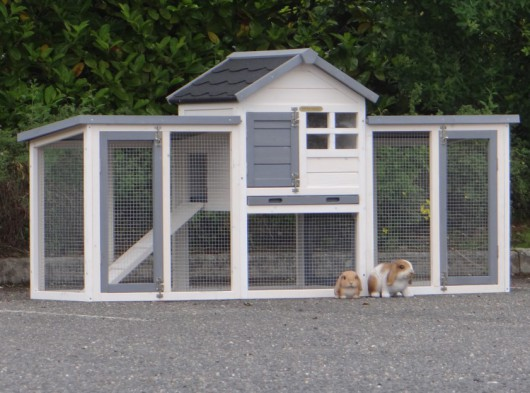

Lijst van rassen
Dwergrassen
- Angoradwerg
- Kleurdwerg
- Kleurdwerg met rexbeharing
- Hermelijn
- Nederlandse hangoordwerg
- Polish of haasdwerg
- Pool blauwoog
- Pool roodoog
- Teddy dwerg
Kleine rassen
- Donkergrannen
- Engelse vlinder
- Engels zilver
- Franse havanna
- Hollander
- Hulstlander
- Kastanjebruin van Lorreynen
- Klein chinchilla
- Klein lotharinger
- Klein zilver
- Lynx
- Marburger Feh (verzilvering pareling)
- Parelfeh (verzilvering pareling)
- Parelgrijs van Halle
- Rus
- Sachsen gold
- Steenkonijn
- Tankonijn
- Thrianta
- Tsjechische rode
- Weners
Middelrassen
- Alaska
- Beige
- Belgisch zilver
- Blauw van Ham
- Blauw van Sint-Niklaas
- Californian
- Deilenaar
- Duitse hangoor
- Eksterkonijn
- Engelse hangoor
- Fauve de Bourgonge
- Gouwenaar
- Groot chinchilla
- Groot zilver
- Havana
- Japanner
- Kunder hangoor
- Luchs
- Marburgen Feh
- Marter
- Meissner hangoor
- Nieuw-Zeelander (wit)
- Nieuw-Zeelander (zwart)
- Normandier
- Papillon
- Parelfeh
- Rijnlander
- Rode Nieuw-Zeelander
- Sallander
- Satijn
- Thüringer
- Blauw van Beveren
- Van Beveren (wit)
- Wit van de Vendée
- Wit van Dendermonde
- Witte van hôtot
- Zandkleur van de Vogezen
- Zilvervos
- Zilver van Champagne
Grote Rassen
- Belgische haas
- Duitse reus
- Franse hangoor (kleur)
- Franse hangoor (wit)
- Gele van Bourgondië
- Lotharinger
- Vale van Bourgondië
- Vlaamse reus (kleur)
- Vlaamse reus (wit)
- Witte van Bouscal
Rassen met een bijzondere haarstructuur
- Angora
- Angoradwerg
- Rex
- Rexdwerg
- Satijn
- Voskonijn
- Voskonijn dwerg
Verschil met het wild konijn
Het verschil van het tamme konijn met het wilde konijn is in eerste instantie de kleur.
Een wild konijn heeft voornamelijk een grijsbruine kleur, wildkleur of agouti genaamd, terwijl tamme konijnen,
afhankelijk van het ras, verschillende kleuren kunnen hebben.
Ook kunnen tamme konijnen, weer afhankelijk van het ras, verschillende groten hebben.
Het lichaamsgewicht is dan ook anders bij een groot ras dan bij een klein ras.
Een groot ras zoals een Vlaamse Reus kan meer dan 8 kilogram wegen, terwijl dwergkonijnen nauwelijks een kilogram wegen.
Ook hebben tamme konijnen over het algemeen een kortere vacht. Uitzondering hier is het Angorakonijn, deze heeft een snelgroeiende
wollen vacht.
Uiterlijk
Zoals eerder genoemd is het uiterlijk van een tam konijn verschillend. Dit ligt aan het ras. Zo is het ras Japanner middelgroot en heeft het konijn verschillende kleuren. En het ras Blauw van ham heeft een blauwgrijze kleur. Ook de grote en gewicht is weer afhankelijk van het ras. Een Duitse reus, het grootste konijnenras van de wereld, kan tot wel 11,5 kg wegen!
Huisvesting
Kant-en-Klare konijnenhokken zijn vaak te klein om een konijn continu in te huisvesten. Konijnen hebben een ren nodig om te rennen, te springen, te spelen en te graven en ook om voor elkaar weg te vluchten. Mijn eigen konijn Snoetje is een Japanner. Voor hem hebben we een kant-en-klaar konijnenhok. Maar hij mag elke dag los door de tuin heen lopen, springen en spelen. Ook hebben we een zandbak voor hem gekocht zodat hij daar in kan graven. Verder is het aan te raden om twee konijnen te nemen, aangezien konijnen groepsdieren zijn. De beste combinatie is om een gecastreerd mannetje en een gesteriliseerd vrouwtje bij elkaar te zetten en te koppelen. Konijnen hebben de behoefte om te spelen. Ze zullen speelgoed erg op prijs stellen. Geschikt speelgoed is onder meer: een kartonnen doos met een gat erin (om in te kruipen/bovenop te springen), lege toiletpapierrolletjes (om mee te gooien), een tennisbal aan een touwtje opgehangen (om tegenaan te botsen), rotanballetjes (om te knagen en om te gooien), een oud telefoonboek (om te scheuren), wilgentakken (om op te knagen), een stuk oud tapijt (om te krabben). Het speelgoed zal gesloopt worden, een teken dat het konijn het leuk vindt. In de meeste dierenwinkels vind je ook speeltjes voor konijnen, bijvoorbeeld een speelbal waarin "snoepjes" zoals gedroogde banaan, rozijnen of andere commerciële snoepjes kunnen worden gestopt. Konijnen zijn erg gevoelig voor hitte. Wanneer de temperatuur boven de 24 graden komt zal het konijn last van de warmte krijgen; boven de 27 graden kan het konijn een levensbedreigende hitteslag oplopen. Het dier wordt apathisch of gaat languit slap liggen, tandvlees en ogen zijn donkerrood, de oren zeer warm, de ogen half gesloten, en de ademhaling wordt zeer snel. Het is derhalve belangrijk de huisvesting van het konijn in de zomer koel te houden en het konijn vooral niet in een hok in de volle zon te zetten. Mijn eigen konijn laten wij op warme dagen altijd uit het hok, zodat hij zelf zijn plekje kan vinden in de schaduw.
Verzorging
Zoals eerder genoemd zijn konijnen groepsdieren. Maar het is niet verstandig om meer datn twee dieren in een ren te houden.
Konijnen kunnen dan rivaliserend gedrag gaan vertonen in de kleine ruimte. Dit kan hevige gevechten opleveren.
De beste combinatie is een gesteriliseerde voedster en een gecastreerde ram. Ook als de ram al gecastreerd is, zijn er goede reden
om de voedster te steriliseren. Tegen de tijd dat de voedster 4-5 jaar is heeft zij - afhankelijk van het ras - een kans van 50-80%
om te sterven aan baarmoeder(hals)kanker, ongeacht of zij een nest heeft gehad.
Konijnen kunnen zowel buiten als binnen gehouden worden. Konijnen kunnen goed tegen kou maar niet tegen tocht, nattigheid en felle zon.
Tijdens een vorstperiode hoeft het hok dan niet in een schuur gezet te worden.
Tot -15 graden Celcius kunnen ze prima leven. Wel hebben konijnen een warm, tochtvrij hok nodig met voldoende stro.
Konijnen zijn uitzonderlijk zindelijke dieren. Het is overbodig om ze in bad te doen.
Soms, bij warm weer, zal het konijn bevuild stro opgraven om zich te koelen.
Hierdoor ontstaan plekken in de vacht die moeilijk te verwijderen zijn.
Een wasbeurt kan helpen, maar meestal verliest het konijn de plekken pas tijdens de rui.
Verschoon het hok dus op tijd. Je moet het konijn iedere week even borstelen.
Dit is goed voor de bloedsomloop van het konijn en de oude haren worden verwijderd.
De tanden van het konijn groeien altijd door en ze moeten dus af kunnen slijten.
Het beste is veel hooi en takken (zoals de splintervrije wilgentakken) waarop ze kunnen knagen.
Te lange tanden hinderen het konijn bij het eten.
Ook bij een goede voeding komt het voor dat de tanden door een verkeerde stand te lang worden en doorgroeien,
deze moeten dan door de dierenarts worden geslepen.
De nagels van het konijn moet je elke twee à drie maanden knippen.
Konijnen zijn herbivoor dus eten vooral plantaardig voedsel. In de winkel kan ook konijnenvoer gekocht worden. Dit kan gemixt voer zijn en gewoon brokken van gedroogd gras. Het beste is om ook kleine stukjes van zoveel mogelijk verschillende groenten te geven. Wilde konijnen eten ook gevarieerd en overal maar een klein beetje van. Voorbeelden van groeten die je je konijn kan geven: andijvie, veldsla, brocolli, wortelen en wortelloof, blaadjes witlof. Ook hebben konijnen genoeg vezels nodig. Geef je konijn daarom ook hooi en gras. Zonder vezels riskeert het konijn diarree of dikkenbuikenziekte. Verder moet er opgelet worden met koolsoorten, kropsla en witlof. Te veel van dit voer zorgt dat het konijn snel gasvorming krijgt, wat ook weer dodelijk kan zijn.
Gallerij
japanner
Vlaamse reus
Lotharinger

Hollander
Nederlandse hangoordwerg